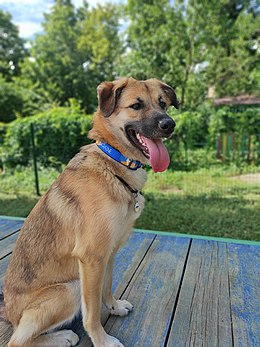
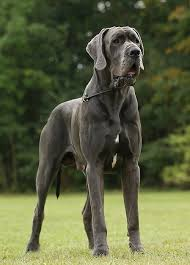

 Пес сві́йський або соба́ка сві́йський (Canis lupus familiaris або Canis familiaris) — культигенна тварина, одомашнена форма вовка. Свійський пес був одним з найбільш широко застосовуваних службових та компанійських тварин протягом всієї історії людства.
За різними оцінками, одомашнення вовка відбулося 33 000 років тому. Дослідження мітохондріальної ДНК показує, що розділення еволюційних ліній собак і вовків відбулося близько 100 000 років тому. Собака швидко став незамінним у всіх світових культурах та був дуже цінним у ранніх людських поселеннях. Зокрема вважають, що успішна еміграція через Берингову протоку була б неможливою без їздових собак. Собаки виконують багато видів робіт для людей, таких як полювання, охорона, служба в поліції та військах, а також собаки допомагають пасти стада худоби, допомагають особам з інвалідністю та служать компанійськими сімейними собаками. Ця універсальність, більша, ніж практично в будь-якої іншої відомої людству тварини, дала собаці прізвисько «найкращий друг людини». За підрахунками, на планеті на 2015 рік проживало близько 522 млн собак.
Завдяки селекції було виведено сотні різноманітних порід і нині між собаками різних порід виявляють більше поведінкових та морфологічних відмінностей, ніж у будь-яких інших наземних ссавців. Наприклад, висота в холці може варіювати від кількох сантиметрів (чихуахуа) до майже метра (ірландський вольфгаунд, великий данець); забарвлення — від білого до чорного, включаючи світло-жовте, сіре, коричневе з великим розмаїттям відтінків.
